F5 Identity and Access Management Solutions > Archived Identity & Access Management Labs > Class 2: OAuth Federation with F5 Source | Edit on
Lab 1: Social Login Lab¶
Note
The entire module covering Social Login is performed on BIG-IP 1 (OAuth C/RS)
Purpose¶
This module will teach you how to configure a Big-IP as a client and resource server enabling you to integrate with social login providers like Facebook, Google, and LinkedIn to provide access to a web application. You will inject the identity provided by the social network into a header that the backend application can use to identify the user.
Task 1: Setup Virtual Server¶
Go to Local Traffic -> Virtual Servers -> Create
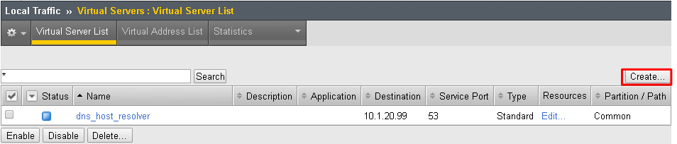
Enter the following values (leave others default)
- Name:
social.f5agility.com-vs - Destination Address:
10.1.20.111 - Service Port:
443 - HTTP Profile:
http - SSL Profile (Client):
f5agility-wildcard-self-clientssl - Source Address Translation:
Auto Map
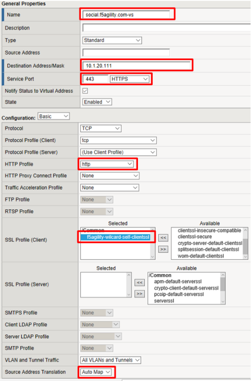
- Name:
Select webapp-pool from the Default Pool drop down and then click Finished
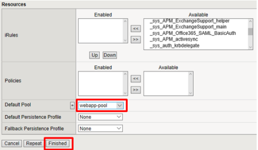
Test access to
https://social.f5agility.comfrom the jump host’s browser.You should be able to see the backend application, but it will give you an error indicating you have not logged in because it requires a header to be inserted to identify the user.
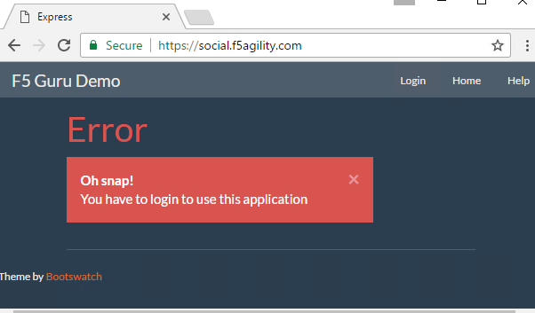
Task 2: Setup APM Profile¶
Go to Access -> Profiles / Policies -> Access Profiles (Per Session Policies) -> Create

Enter the following values (leave others default) then click Finished
- Name:
social-ap - Profile Type:
All - Profile Scope:
Profile - Languages: English
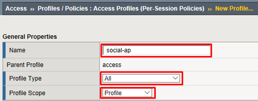
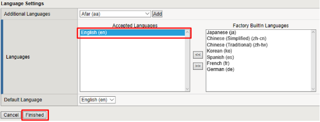
- Name:
Click Edit for social-ap, a new browser tab will open
Click the + between Start and Deny, select OAuth Logon Page from the Logon tab, click Add Item
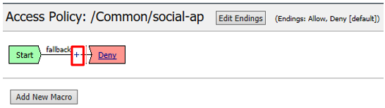
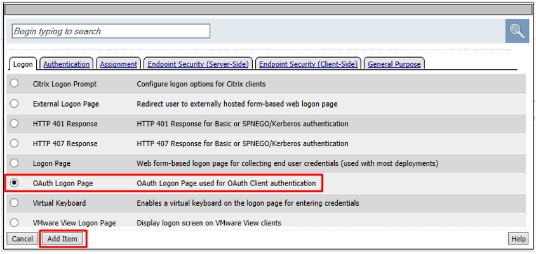
Set the Type on Lines 2, 3, and 4 to none
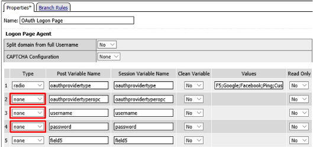
Change the Logon Page, Input Field #1 to “Choose a Social Logon Provider”
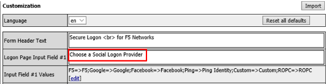
Click the Values column for Line 1, a new window will open.
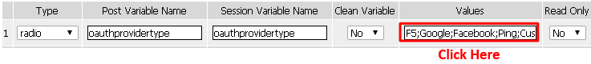
Alternatively, you may click [Edit] on the Input Field #1 Values line. Either item will bring you to the next menu.
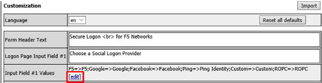
Click the X to remove F5, Ping, Custom, and ROPC
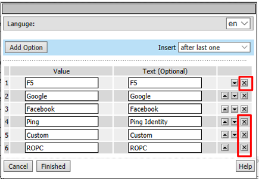
Click Finished
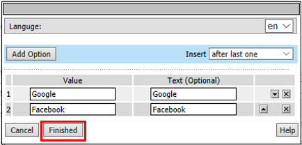
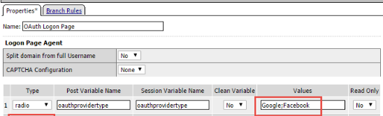
Note
The resulting screen is shown
- Go to the Branch Rules tab and click the X to remove F5,
Ping, Custom, F5 ROPC, and Ping ROPC
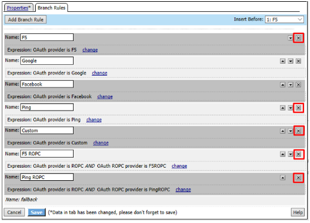
Click Save
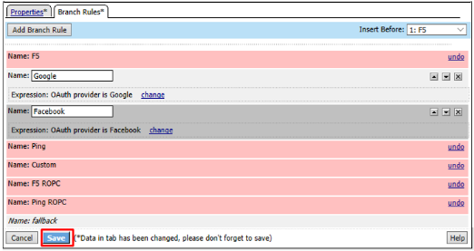
Click Apply Access Policy in the top left and then close the browser tab
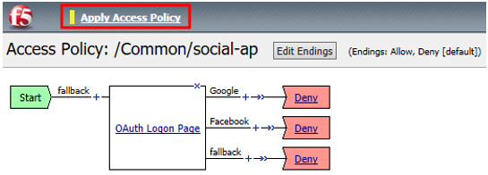
Task 3: Add the Access Policy to the Virtual Server¶
Go to Local Traffic -> Virtual Servers -> social.f5agility.com-vs
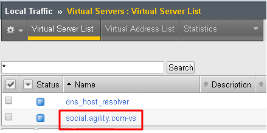
Modify the Access Profile setting from none to social-ap and click Update
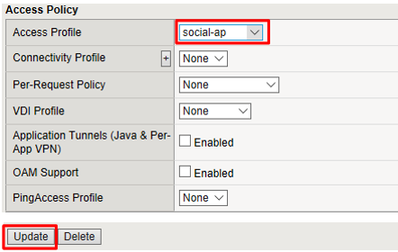
Test access to https://social.f5agility.com from the jump host again, you should now see a logon page requiring you to select your authentication provider. Any attempt to authenticate will fail since we have only deny endings.
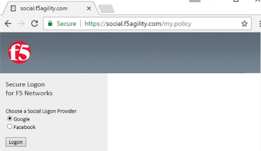
Task 4: Google (Built-In Provider)¶
Setup a Google Project¶
Login at https://console.developers.google.com
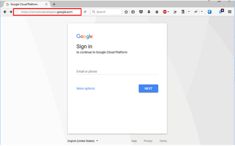
Note
This portion of the exercise requires a Google Account. You may use an existing one or create one for the purposes of this lab
Click Create Project and give it a name like “OAuth Lab” and click Create
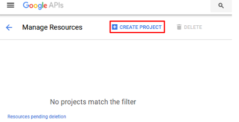
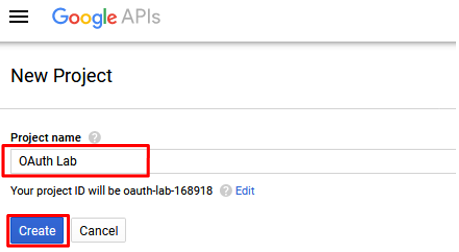
Note
You may have existing projects so the menus may be slightly different.
Note
You may have to click on Google+ API under Social APIs
Go to the Credentials section on the left side.
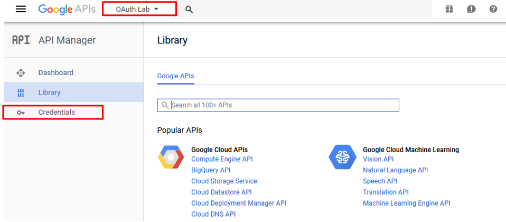
Note
You may have navigate to your OAuth Lab project depending on your browser or prior work in Google Developer
Click OAuth Consent Screen tab, fill out the product name with “OAuth Lab”, then click save
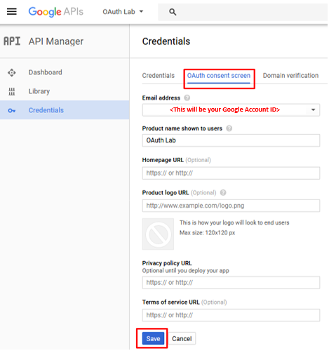
Go to the Credentials tab (if you are not taken there), click Create Credentials and select OAuth Client ID
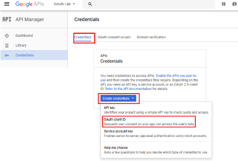
Under the Create Client ID screen, select and enter the following values and click Create
- Application Type:
Web Application - Name:
OAuth Lab - Authorized Javascript Origins:
https://social.f5agility.com - Authorized Redirect URIs:
https://social.f5agility.com/oauth/client/redirect
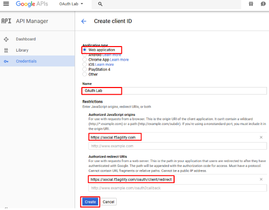
- Application Type:
Copy the Client ID and Client Secret to notepad, or you can get it by clicking on the OAuth Lab Credentials section later if needed. You will need these when you setup Access Policy Manager (APM).
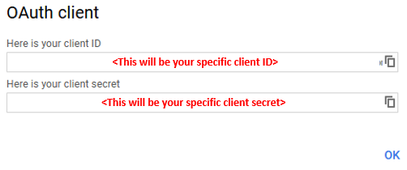
Click Library in the left-hand navigation section, then select Google+ API under Social APIs or search for it
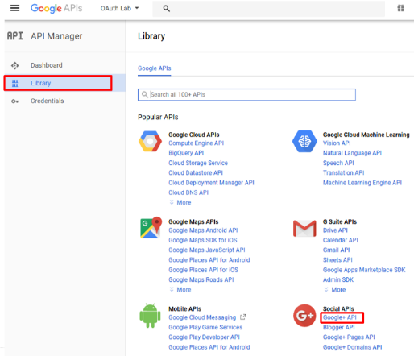
Click Enable and wait for it to complete, you will now be able to view reporting on usage here
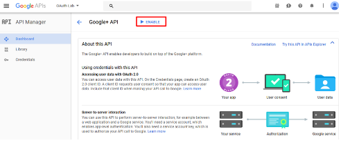
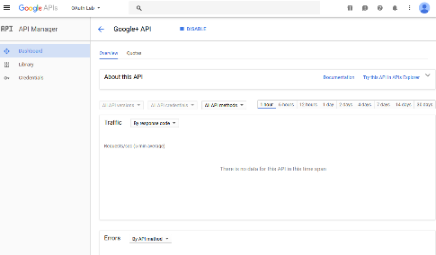
For Reference: This is a screenshot of the completed Google project:
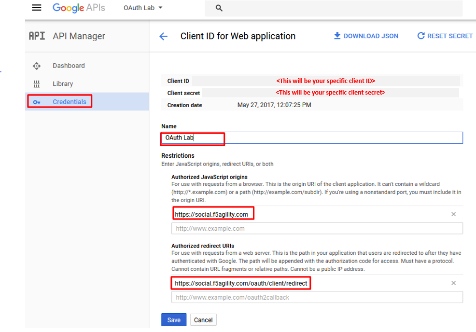
Configure Access Policy Manager (APM) to authenticate with Google¶
Configure the OAuth Server Object: Go to Access -> Federation -> OAuth Client / Resource Server -> OAuth Server and click Create
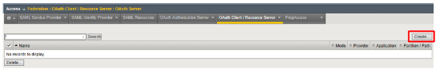
Enter the values as shown below for the OAuth Server and click Finished
- Name: Google
- Mode:
Client + Resource Server - Type:
Google - OAuth Provider:
Google - DNS Resolver:
oauth-dns *(configured for you)* - Client ID:
<Client ID from Google> - Client Secret:
<Client Secret from Google> - Client’s ServerSSL Profile Name:
apm-default-serverssl - Resource Server ID:
<Client ID from Google> - Resource Server Secret:
<Client Secret from Google> - Resource Server’s ServerSSL Profile Name:
apm-default-serverssl
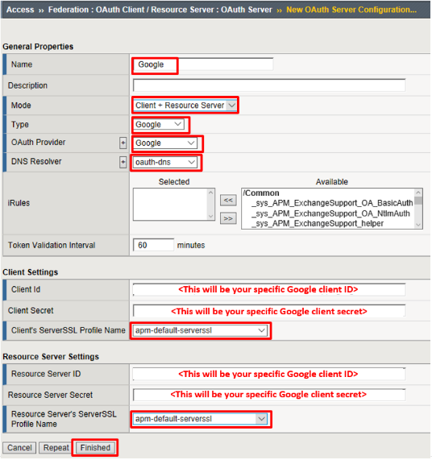
Configure the VPE for Google: Go to Access -> Profiles / Policies -> Access Profiles (Per Session Policies) and click Edit on
social-ap, a new browser tab will openClick the + on the Google provider’s branch after the OAuth Logon Page
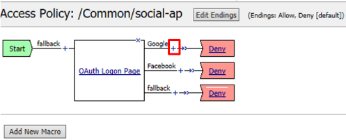
Select OAuth Client from the Authentication tab and click Add Item
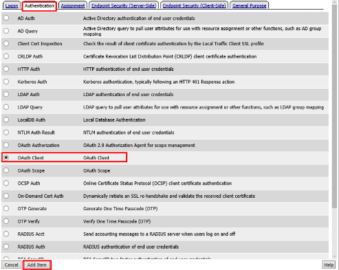
Enter the following in the OAuth Client input screen and click Save
- Name:
Google OAuth Client - Server:
/Common/Google - Grant Type:
Authorization Code - Authentication Redirect Request:
/Common/GoogleAuthRedirectRequest - Token Request:
/Common/GoogleTokenRequest - Refresh Token Request:
/Common/GoogleTokenRefreshRequest - Validate Token Request:
/Common/GoogleValidationScopesRequest - Redirection URI:
https://%{session.server.network.name}/oauth/client/redirect - Scope:
profile
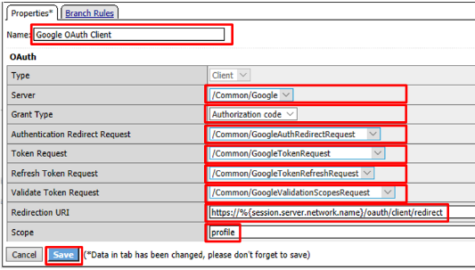
- Name:
Click + on the Successful branch after the Google OAuth Client
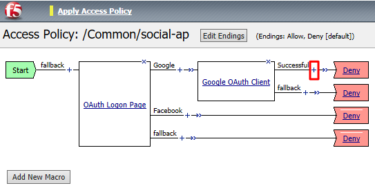
Select OAuth Scope from the Authentication tab, and click Add Item
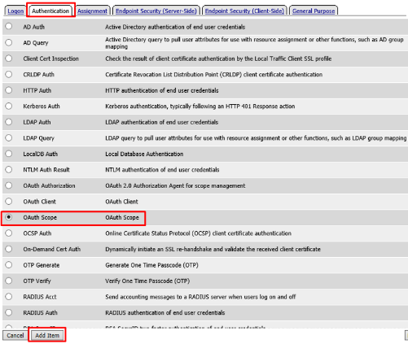
Enter the following on the OAuth Scope input screen and click Save
- Name:
Google OAuth Scope - Server:
/Common/Google - Scopes Request:
/Common/GoogleValidationScopesRequest
- Name:
Click Add New Entry
- Scope Name:
https://www.googleapis.com/auth/userinfo.profile - Request:
/Common/GoogleScopeUserInfoProfileRequest
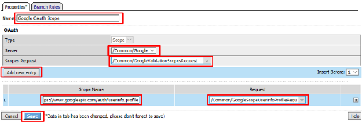
- Scope Name:
- Click the + on the Successful branch after the
Google OAuth Scope object
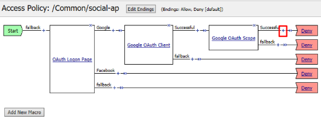
- Select Variable Assign from the Assignment tab, and click
Add Item
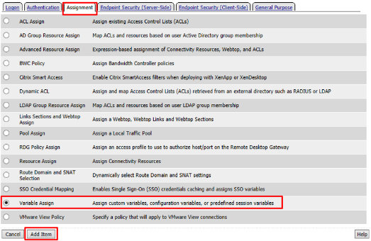
Name it Google Variable Assign and click Add New Entry then change
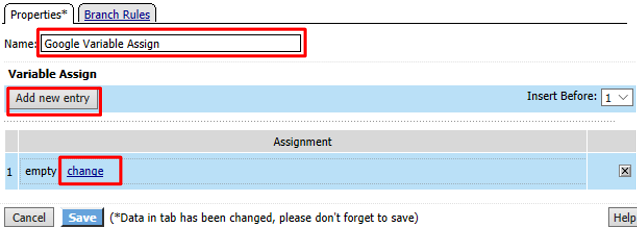
Enter the following values and click Finished
Left Side:
- Type:
Custom Variable - Security:
Unsecure - Value:
session.logon.last.username
Right Side:
- Type:
Session Variable - Session Variable:
session.oauth.scope.last.scope_data.userinfo.profile.displayName
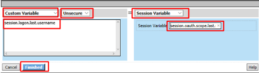
- Type:
Review the Google Variable Assign object and click Save
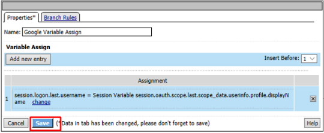
Click Deny on the Fallback branch after the Google Variable Assign object, select Allow in the pop up window and click Save
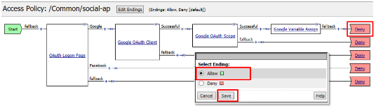
Click Apply Access Policy in the top left and then close the tab
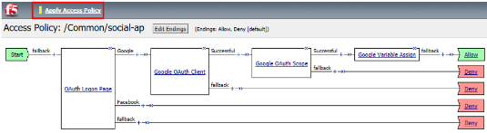
Test Configuration¶
Test by opening Chrome in the jump host and browsing to
https://social.f5agility.com, select the provider and attempt logon.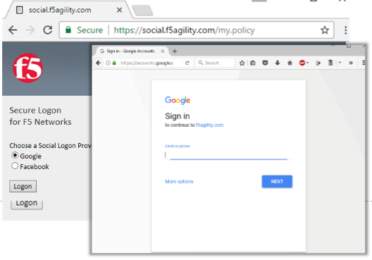
Note
You are able to login and reach the app now, but SSO to the app has not been setup so you get an application error.
Note
You may also be prompted for additional security measures as you are logging in from a new location.
Task 5: Facebook (Built-In Provider)¶
Setup a Facebook Project¶
Go to https://developers.facebook.com and Login
Note
This portion of the exercise requires a Facebook Account. You may use an existing one or create one for the purposes of this lab
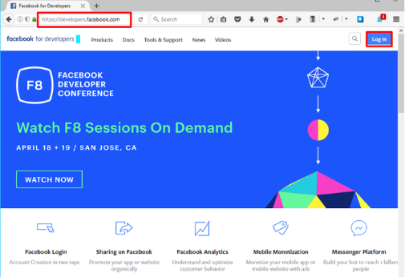
If prompted click, Get Started and accept the Developer Policy. Otherwise, click Create App
Click Create App and name (Display Name) your app (Or click the top left project drop down and create a new app, then name it). Then click Create App ID.
Note
For example the Display Name given here was “OAuth Lab”. You may also be prompted with a security captcha
Click Get Started in the Facebook Login section (Or click + Add Product and then Get Started for Facebook)
From the “Choose a Platform” screen click on WWW (Web)
In the “Tell Us about Your Website” prompt, enter
https://social.f5agility.comfor the Site URL and click Save then click ContinueClick Next on the “Set Up the Facebook SDK for Javascript” screen
Click Next on the “Check Login Status” screen
Note
Additional screen content removed.
Click Next on the “Add the Facebook Login Button” screen
Click Facebook Login on the left side bar and then click Settings
For the Client OAuth Settings screen in the Valid OAuth redirect URIs enter
https://social.f5agility.com/oauth/client/redirectand then click enter to create it, then Save ChangesClick Dashboard in the left navigation bar
Here you can retrieve your App ID and App Secret for use in Access Policy Manager (APM).
Screenshot of completed Facebook project
Note
If you want Facebook Auth to work for users other than the developer you will need to publish the project
Configure Access Policy Manager (APM) to authenticate with Facebook¶
Configure the OAuth Server Object: Go to Access -> Federation -> OAuth Client / Resource Server -> OAuth Server and click Create
Enter the values as shown below for the OAuth Server and click Finished
- Name:
Facebook - Mode:
Client + Resource Server - Type:
Facebook - OAuth Provider:
Facebook - DNS Resolver:
oauth-dns(configured for you) - Client ID:
<App ID from Facebook> - Client Secret:
<App Secret from Facebook> - Client’s ServerSSL Profile Name:
apm-default-serverssl - Resource Server ID: `` App ID from Facebook>``
- Resource Server Secret:
<App Secret from Facebook> - Resource Server’s ServerSSL Profile Name:
apm-default-serverssl
- Name:
Configure the VPE for Facebook: Go to Access -> Profiles / Policies -> Access Profiles (Per Session Policies) and click Edit on
social-ap, a new browser tab will openClick the + on the Facebook provider’s branch after the OAuth Logon Page
Select OAuth Client from the Authentication tab and click Add Item
Enter the following in the OAuth Client input screen and click Save
- Name:
Facebook OAuth Client - Server:
/Common/Facebook - Grant Type:
Authorization Code - Authentication Redirect Request:
/Common/FacebookAuthRedirectRequest - Token Request:
/Common/FacebookTokenRequest - Refresh Token Request:
None - Validate Token Request: `` /Common/FacebookValidationScopesRequest``
- Redirection URI:
https://%{session.server.network.name}/oauth/client/redirect - Scope:
public_profile(Note underscore)
- Name:
Click + on the Successful branch after the Facebook OAuth Client
Select OAuth Scope from the Authentication tab, and click Add Item
Enter the following on the OAuth Scope input screen and click Save
- Name:
Facebook OAuth Scope - Server:
/Common/Facebook - Scopes Request:
/Common/FacebookValidationScopesRequest - Click Add New Entry
- Scope Name:
public_profile - Request:
/Common/FacebookScopePublicProfile
- Name:
Click the + on the Successful branch after the Facebook OAuth Scope object
Select Variable Assign from the Assignment tab, and click Add Item
Name it Facebook Variable Assign and click Add New Entry then change
Enter the following values and click Finished
Left Side:
- Type:
Custom Variable - Security:
Unsecure - Value:
session.logon.last.username
Right Side:
- Type:
Session Variable - Session Variable:
session.oauth.scope.last.scope_data.public_profile.name
- Type:
Review the Facebook Variable Assign object and click Save
Click Deny on the Fallback branch after the Facebook Variable Assign object, select Allow in the pop up window and click Save
Click Apply Access Policy in the top left and then close the tab
Test Configuration¶
Test by opening Chrome in the jump host and browsing to
https://social.f5agility.com, select the provider and attempt logon.Note
You are able to login and reach the app now, but SSO to the app has not been setup so you get an application error.
Note
You may also be prompted for additional security measures as you are logging in from a new location
Note
You may need to start a Chrome New Incognito Window so no session data carries over.
You should be prompted to authorize your request. Click Continue as <Account> (Where <Account> is your Facebook Profile name)
Task 6: LinkedIn (Custom Provider)¶
Login at
https://www.linkedin.com/secure/developerNote
This portion of the exercise requires a LinkedIn Account. You may use an existing one or create one for the purposes of this lab*
Click Create Application
In the Create a New Application screen fill in the required values and click Submit
Note
Generic values have been shown. You may use the values you deem appropriate
Note
An Application logo has been provided on your desktop ‘OAuth2.png’
In the “Authentication Keys” screen, check the boxes for
r_basicprofileandr_emailaddress. In the Authorized Redirect URLs, enterhttps://social.f5agility.com/oauth/client/redirectClick Add. Finally, click Update at the bottom of the screen.
Configure Access Policy Manager (APM) to authenticate with LinkedIn¶
Configure the OAuth Server Object: Go to Access -> Federation -> OAuth Client / Resource Server -> Provider and click Create
Note
You are creating a “Provider”
Enter the values as shown below for the OAuth Provider and click Finished
- Name:
LinkedIn - Type:
Custom - Authentication URI:
https://www.linkedin.com/oauth/v2/authorization - Token URI:
https://www.linkedin.com/oauth/v2/accessToken - Token Validation Scope URI:
https://www.linkedin.com/v1/people/~
- Name:
Configure the OAuth Redirect Request Profile Object: Go to Access -> Federation -> OAuth Client / Resource Server -> Request and click Create
Enter the values as shown for the OAuth Request and click Finished
- Name:
LinkedInAuthRedirectRequest - HTTP Method:
GET - Type:
auth-redirect-request
- Name:
Add the following request parameters and click Add after entering the values for each:
- Parameter Type:
custom - Parameter Name:
response_type - Parameter Value:
code - Parameter Type:
client-id - Parameter Name:
client_id - Parameter Type:
redirect-uri - Parameter Name:
redirect_uri - Parameter Type:
scope - Parameter Name:
scope
Note
LinkedIn requires a state parameter, but we already insert it by default.
- Parameter Type:
Configure the OAuth Token Request Profile Object: Go to Access -> Federation -> OAuth Client / Resource Server -> Request and click Create
Enter the values as shown for the OAuth Request and click Finished
- Name:
LinkedInTokenRequest - HTTP Method:
POST - Type:
token-request
- Name:
Add the following request parameters and click Add after entering the values for each:
- Parameter Type:
grant-type - Parameter Name:
grant_type - Parameter Type:
redirect-uri - Parameter Name:
redirect_uri - Parameter Type:
client-id - Parameter Name:
client_id - Parameter Type:
client-secret - Parameter Name:
client_secret
- Parameter Type:
Configure the OAuth Validation Scopes Request Profile Object: Go to Access -> Federation -> OAuth Client / Resource Server -> Request and click Create
Enter the values as shown for the OAuth Request and click Finished
- Name:
LinkedInValidationScopesRequest - HTTP Method:
GET - Type:
validation-scopes-request
- Name:
Add the following request parameters and click Add after entering the values for each:
- Parameter Type:
custom - Parameter Name:
oauth2_access_token - Parameter Value:
%{session.oauth.client.last.access_token} - Parameter Type:
custom - Parameter Name:
format - Parameter Value:
json
- Parameter Type:
Configure the OAuth Scope Data Request Profile Object: Go to Access -> Federation -> OAuth Client / Resource Server -> Request and click Create
Enter the values as shown for the OAuth Request and click Finished
- Name:
LinkedInScopeBasicProfile - HTTP Method:
GET - URI:
https://api.linkedin.com/v1/people/~ - Type:
scope-data-request
- Name:
Add the following request parameters and click Add after entering the values for each:
- Parameter Type:
custom - Parameter Name: `` oauth2_access_token``
- Parameter Value:
%{session.oauth.client.last.access_token} - Parameter Type:
custom - Parameter Name:
format - Parameter Value:
json
- Parameter Type:
Configure the OAuth Server Object: Go to Access -> Federation -> OAuth Client / Resource Server -> OAuth Server and click Create
Enter the values as shown below for the OAuth Server and click Finished
- Name:
LinkedIn - Mode:
Client + Resource Server - Type:
Custom - OAuth Provider:
LinkedIn - DNS Resolver:
oauth-dns *(configured for you)* - Client ID:
<App ID from LinkedIn> - Client Secret:
<App Secret from LinkedIn > - Client’s ServerSSL Profile Name:
apm-default-serverssl - Resource Server ID:
<App ID from LinkedIn > - Resource Server Secret:
<App Secret from LinkedIn > - Resource Server’s ServerSSL Profile Name:
apm-default-serverssl
- Name:
Configure the VPE for LinkedIn: Go to Access -> Profiles / Policies -> Access Profiles (Per Session Policies) and click Edit on
social-ap, a new browser tab will openClick on the link OAuth Logon Page as shown
Click on the Values area of Line #1 as shown. A pop-up window will appear
Click Add Option. In the new Line 3, type LinkedIn in both the Value and Text (Optional) fields and click Finished
Click on the Branch Rules tab of the OAuth Logon Page screen
Click Add Branch Rule. In the resulting new line enter LinkedIn for the Name field and click the Change link on the Expression line
Click Add Expression on the Simple tab
Select OAuth Logon Page in the Agent Sel: drop down. Select OAuth provider type from the Condition drop down. In the OAuth provider field enter LinkedIn and then click Add Expression
Click Finished on the Simple Expression tab
Click Save on the completed Branch Rules tab
Click the + on the LinkedIn provider’s branch after the OAuth Logon Page
Note
If not still in the VPE: Go to Access -> Profiles / Policies -> Access Profiles (Per Session Policies). Click Edit on social-ap, a new browser tab will open*
Select OAuth Client from the Authentication tab and click Add Item
Enter the following in the OAuth Client input screen and click Save
- Name:
LinkedIn OAuth Client - Server:
/Common/LinkedIn - Grant Type:
Authorization Code - Authentication Redirect Request:
/Common/LinkedInAuthRedirectRequest - Token Request:
/Common/LinkedInTokenRequest - Refresh Token Request:
None - Validate Token Request:
/Common/LinkedInValidationScopesRequest - Redirection URI:
https://%{session.server.network.name}/oauth/client/redirect - Scope:
r_basicprofile *(Note underscore)*
- Name:
Click + on the Successful branch after the LinkedIn OAuth Client
Select OAuth Scope from the Authentication tab, and click Add Item
Enter the following on the OAuth Scope input screen and click Save
- Name:
LinkedIn OAuth Scope - Server:
/Common/LinkedIn - Scopes Request:
/Common/LinkedInValidationScopesRequest - Click Add New Entry
- Scope Name:
r_basicprofile - Request:
/Common/LinkedInScopeBasicProfile
- Name:
Click the + on the Successful branch after the LinkedIn OAuth Scope object
Select Variable Assign from the Assignment tab, and click Add Item
Name it LinkedIn Variable Assign and click Add New Entry then change
Enter the following values and click Finished
Left Side:
- Type:
Custom Variable - Security:
Unsecure - Value:
session.logon.last.username
Right Side:
- Type:
Session Variable - Session Variable:
session.oauth.scope.last.firstName
- Type:
Review the LinkedIn Variable Assign object and click Save
Click Deny on the Fallback branch after the LinkedIn Variable Assign object, select Allow in the pop up window and click Save
Click Apply Access Policy in the top left and then close the tab
Test Configuration¶
Test by opening Chrome in the jump host and browsing to
https://social.f5agility.com, select the provider and attempt logon.Note
You are able to login and reach the app now, but SSO to the app has not been setup so you get an application error.
Note
You may also be prompted for additional security measures as you are logging in from a new location.
Note
You may need to start a Chrome New Incognito Window so no session data carries over.
You will be prompted to authorize your request. Click Allow.
Task 7: Add Header Insertion for SSO to the App¶
In this task you will create a policy that runs on every request. It will insert a header into the serverside HTTP Requests that contains the username. The application will use this to identify who the user is, providing Single Sign On (SSO).
Configure the Per Request Policy¶
Go to Access -> Profiles/Policies -> Per Request Policies and click Create
Enter prp-x-user-insertion the Name field and click Finished
Click Edit on the prp-x-user-insertion policy line
Click the + symbol between Start and Allow
Under the General Purpose tab select HTTP Headers and click Add Item
Under the HTTP Header Modify section, click Add New Entry to add the following two headers and then click Save
- Header Operation:
replace - Header Name:
X-User - Header Value:
%{session.logon.last.username} - Header Operation:
replace - Header Name:
X-Provider - Header Value:
%{session.logon.last.oauthprovidertype}
Note
Replace instead of Insert has been selected for Header Operation to improve security. A malicious user might insert their own X-User header. As using Insert would simply add another header. Using Replace will add a header if it does not exist, or replace one if it does.
You do not need to Apply Policy on per request policies. You may simply close the browser tab
- Header Operation:
Add the Per Request Policy to the Virtual Server¶
Go to Local Traffic -> Virtual Servers and click on
social.f5agility.com-vsScroll to the Access Policy section of the Virtual Server and select
prp-x-user-insertionfrom the Per-Request Policy drop down. Scroll to the bottom of the page and click Update
Test Configuration¶
Go to https://social.f5agility.com in your browser and logon using one of the social logon providers. This time you should see your name appear in the top right corner. You can also click “Headers” in the webapp and look at the headers presented to the client. You will see x-user present here with your name as the value. You’ll also see the x-provider header you inserted indicating where the data is coming from.